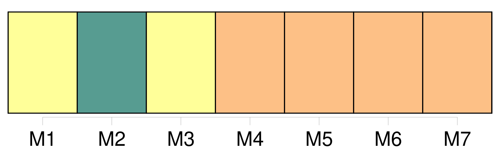
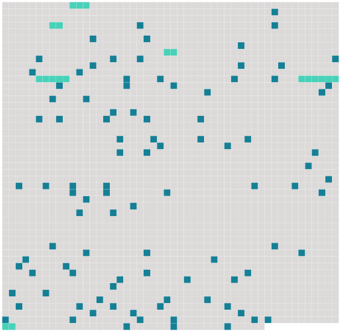

Longueur nb maillons : 104 mentions |
 |
» [2 phrases] « Non, [docteur] , je ne comprendrai jamais qu'une femme trompe son mari. [4 phrases]
» [1 phrases] [Je] vous assure qu'on ne réfléchit guère à toutes ces subtilités quand l'envie vous prend de faillir. [Je] suis même certain qu'une femme n'est mûre pour l'amour vrai qu'après avoir passé par toutes les promiscuités et tous les dégoûts du mariage, qui n'est, suivant un homme illustre, qu'un échange de mauvaises humeurs pendant le jour et de mauvaises odeurs pendant la nuit. [2 phrases]
Si [je] la pouvais comparer à une maison, [je] dirais qu'elle n'est habitable que lorsqu'un mari, a essuyé les plâtres. [3 phrases]
» [3 phrases]
.. Tenez, [je] vais vous raconter une petite histoire arrivée à une de [mes] clientes à qui [j'] aurais donné le bon Dieu sans confession, comme on dit. [1 phrases]
« Un soir, comme [je] dormais profondément de ce pesant premier sommeil si difficile à troubler, il [me] sembla, dans un rêve obscur, que les cloches de la ville sonnaient au feu. « Tout à coup [je] m'éveillai : c'était [ma] sonnette, celle de la rue, qui tintait désespérément. Comme [mon] domestique ne semblait point répondre, [j'] agitai à mon tour le cordon pendu dans mon lit, et bientôt des portes battirent, des pas troublèrent le silence de la maison dormante ; puis Jean parut, tenant une lettre qui disait : « Mme Lelièvre prie avec instance [M. le docteur Siméon] de passer chez elle immédiatement.
» Et [je] répondis : « [Le docteur Siméon, fort souffrant] , prie Mme Lelièvre de vouloir bien appeler [son] confrère M. Bonnet.
» « Une demi-heure plus tard environ, la sonnette de la rue appela de nouveau, et Jean vint [me] dire : « C'est quelqu'un, un homme ou une femme ( je ne sais pas au juste, tant il est caché ) qui voudrait parler bien vite à [monsieur] [1 phrases]
» [1 phrases]
» [5 phrases] [Docteur] ... [Venez] [4 phrases]
. » Puis [je] de mandai : « C'est vous -même qui êtes venue tout à l'heure?? [7 phrases] « [J'] étais prêt, mais [je] m'écriai : « Sacre-bleu, [je] n'ai pas dit d'atteler [mon] coupé. [3 phrases] « Quand elle fut à [mon] côté dans l'obscurité de la voiture, elle [me] saisit brusquement la main, et la broyant dans ses doigts fins, elle balbutia avec des secousses dans la voix, des secousses venues du coeur déchiré : « Oh!! si [vous] saviez, si [vous] saviez comme je souffre!! [1 phrases]
» [3 phrases] « Et [je] pénétrai dans la chambre. [4 phrases] « [Je] m'approchai ; [je] le considérai ; [je] le tâtai ; [j'] ouvris les yeux ; [je] palpai les mains, puis, me tournant vers les deux femmes qui grelottaient comme si elles eussent été gelées, [je] leur dis : « Aidez [-moi] à le porter sur le lit. [1 phrases] Alors, [j'] auscultai le coeur et [je] posai une glace devant la bouche ; puis [je] murmurai : « C'est fini, habillons -le bien vite. [1 phrases] « [Je] prenais un à un les membres comme ceux d'une énorme poupée, et [je] les tendais aux vêtements qu'apportaient les femmes. [1 phrases] « Quand il fallut boutonner les bottines, les deux femmes se mirent à genoux, tandis que [je] les éclairais ; mais comme les pieds étaient enflés un peu, ce fut effroyablement difficile. [1 phrases] « Sitôt que l'horrible toilette fut terminée, [je] considérai notre oeuvre et [je] dis : « Il faudrait le repeigner un peu. [6 phrases] « [J'] eus un sursaut : « Bigre, minuit!! [3 phrases] [J'] ordonnai : « Portons -le dans le salon.
Nous le prîmes tous trois, et, l'ayant emporté, [je] le fis asseoir sur un canapé, puis [j'] allumai les candélabres. [2 phrases] [Je] criai : « Rosé, vite, apportez [-moi] les serviettes et la cuvette, et refaites la chambre ; dépêchez -vous, nom de Dieu!! [1 phrases]
» [1 phrases] Alors [j'] appelai : « Par ici, [mon] cher : nous avons eu un accident. [4 phrases]
» [J'] étais resté tard à bavarder chez vous avec votre femme et notre ami qui [m'] avait amené dans sa voiture. [1 phrases] [Je] n'ai pas voulu appeler des étrangers. Aidez [-moi] donc à le faire descendre ; [je] le soignerai mieux chez lui. [1 phrases]
[Je] m'attelai entre les jambes, comme un cheval entre deux brancards ; et nous voilà descendant l'escalier, éclairés maintenant par la femme. « Lorsque nous fûmes devant la porte, [je] redressai le cadavre et [je] lui parlai, l'encourageant pour tromper son cocher. [2 phrases]
» « Le mari inquiet [me] demandait : « Croyez [-vous] que ce soit grave??
» [1 phrases] « [Je] serrai les mains, et [je] donnai l'ordre de partir.
Tout le long de la route, le mort [me] retomba sur l'oreille droite. « Quand nous fûmes arrivés chez lui, [j'] annonçai qu'il avait perdu connaissance en chemin. [J'] aidai à le remonter dans sa chambre, puis [je] constatai le décès ; [je] jouai toute une nouvelle comédie devant sa famille éperdue. Enfin [je] regagnai [mon] lit, non sans jurer contre les amoureux.
»
La jeune femme crispée demanda :
» |
 |
Il est possible de télécharger la ressource sur la page Ortolang |
Si vous avez des questions ou vous voyez des erreurs, merci d'envoyer un mail à silvia.federzoni89@gmail.com |